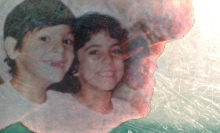

Lavashak
Narges Kalhor
Deutschland 2014
27 min – HD – farsiOmeU
Es gibt Augenblicke, in denen man eine Entscheidung treffen muss. In einer Konfliktsituation bleiben, oder lieber gehen? Nach einer Zeit kann es einem gelingen, über diese Momente nachzudenken, aber es wird einem nie gelingen, sie noch einmal zu erleben. Ich wuchs in Teheran mit meinem Cousin Saeid auf. Fünf Monate, nachdem ich Iran für immer verlassen hatte, wurde er von einer Lawine begraben und getötet. Jeden Monat erhalte ich ein Päckchen von Zuhause. Immer ist meine Lieblingssüßigkeit drin, die ich als Kind so gerne aß – immer mit Saeid nach der Schule. Diesmal jedoch war etwas anderes im Päckchen: drei DVDs, mit den letzten Minuten aus Saeids Leben. – Narges Kalhor
mittwoch 14 okt 18.30 uhr werkstattkino
Narges Kalhor geb. 1984 in Teheran, Iran. Studium an der Hochschule für Fernsehen und Film in Teheran. Als sie 2009 mit ihrem Kurzfilm DIE EGGE aus dem Iran nach Nürnberg zum Internationalen Nürnberger Filmfestival der Menschenrechte kommt, muss sie in Deutschland politisches Asyl beantragen. Seit 2010 Studium Dokumentarfilmregie an der Hochschule für Fernsehen und Film München.
Filme (Auswahl) We must have died! 2006 – Die Egge 2008 – München-Teheran 2010 – Zwei Gesichter 2013 – Shoot me! 2013 – Kafan 2014 (9. UX) – Neda 2014 (10. UX) – Lavaschak 2014 (10. UX)